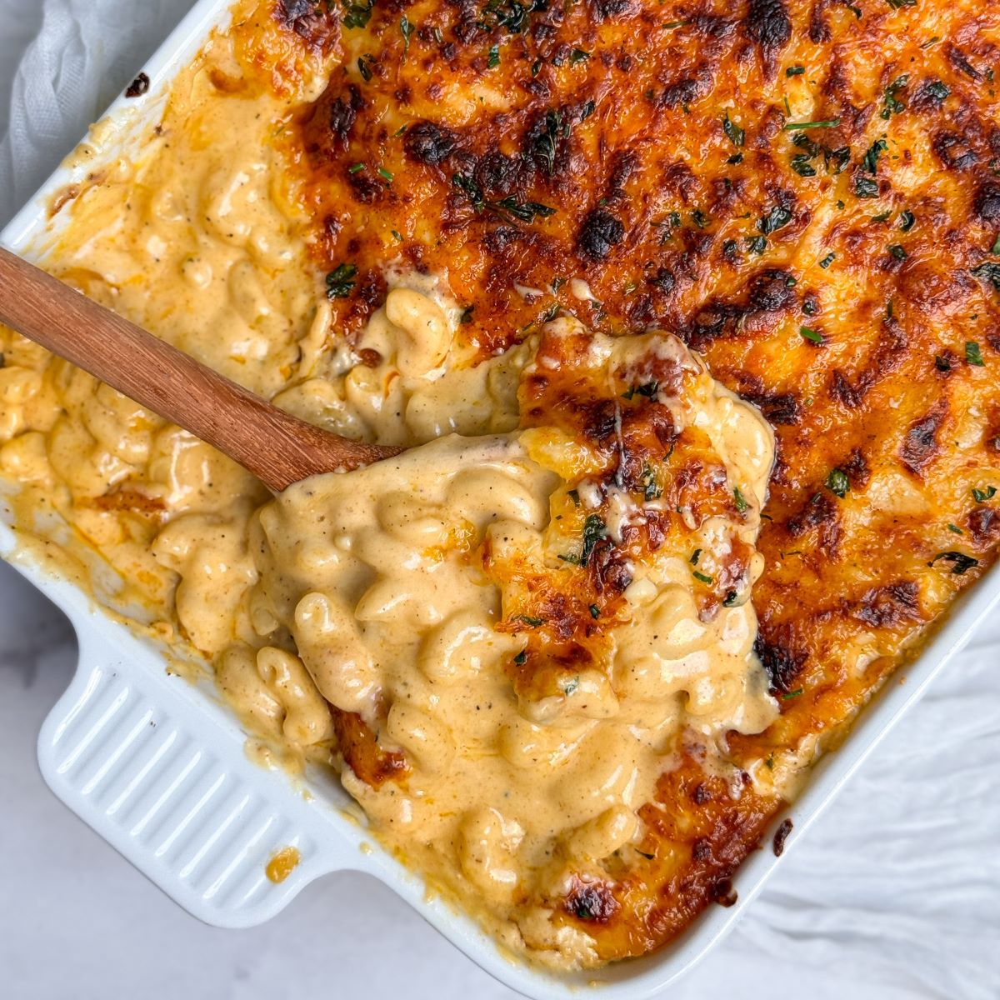

|  |
- 1/2 lb Smoked Gouda
- 1/2 lb Parmesan
- 1/2 lb Colby Jack
- 1/2 lb Provolone
- 1/2 sharp white Cheddar
- 1/2 sharp Cheddar
- 1/2 mild Cheddar
- 32 oz block of Velveeta
- 2 eggs
- 1 cup of heavy cream
- 2 boxes of macaroni shells
- 1 stick of unsalted butter
- Seasonings: Salt, Pepper, Paprika, Garlic Powder, Onion Powder, Italian Seasoning
|